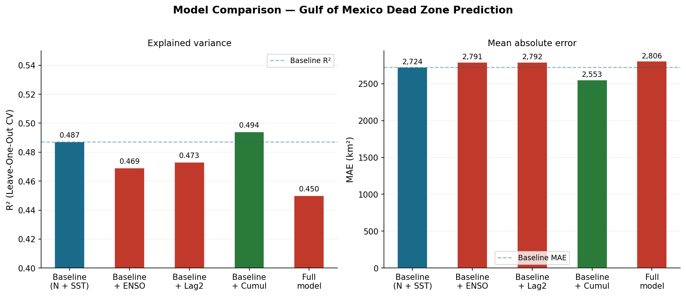

Oceanography · Hypoxia · Machine Learning
A 40-year analysis using Random Forest regression and leave-one-out cross-validation to quantify the marginal value of climate oscillation indices and multi-year nutrient memory in dead zone prediction.
Keywords: Gulf of Mexico · hypoxia · dead zone · nitrogen loading · ENSO · Random Forest · leave-one-out cross-validation · Mississippi River
Abstract
The Gulf of Mexico hypoxic zone - colloquially known as the dead zone - forms annually near the mouth of the Mississippi River, driven primarily by spring nitrogen loading from Midwestern agriculture. While this relationship is well-established in the literature, the potential contributions of climate oscillation indices such as the El Niño Southern Oscillation (ENSO) and multi-year nitrogen accumulation have received less systematic quantitative attention. This study applies Random Forest regression with leave-one-out cross-validation to 40 years of annual dead zone measurements (1985–2024), testing five model configurations: a nitrogen-SST baseline, baseline plus ENSO indices, baseline plus lagged nitrogen, baseline plus 2-year cumulative nitrogen, and a full model combining all features. Results indicate that ENSO indices (ONI spring: r = −0.084) and lagged nitrogen features provide no statistically meaningful improvement over the baseline (R² = 0.487). The 2-year cumulative nitrogen loading configuration achieves the marginal best performance (R² = 0.494, MAE = 2,553 km²), suggesting a weak multi-year memory effect. The full model underperforms the baseline (R² = 0.450), consistent with overfitting under small-sample conditions. These findings support the hypothesis that the Gulf hypoxic system resets annually, with same-year spring nitrogen loading remaining the dominant and effectively sufficient predictor of summer dead zone extent.
1. Introduction
Every summer, a hypoxic zone forms in the northern Gulf of Mexico near the mouth of the Mississippi River. When dissolved oxygen concentrations drop below 2 mg/L, fish, shrimp, and bottom-dwelling organisms suffocate or flee. The zone has been measured annually since 1985 by NOAA and the Louisiana Universities Marine Consortium (LUMCON), with sizes ranging from 6,480 km² (2018) to 22,720 km² (2017).
The primary driver of hypoxia is well understood: nitrogen and phosphorus fertilizer applied to crops in the Mississippi River watershed drains into the river each spring, triggering algal blooms in the Gulf. When the algae decompose, bacterial respiration consumes dissolved oxygen in the stratified bottom waters. Rabalais et al. (2002) established the strong empirical link between spring nitrogen flux and summer dead zone size. Subsequent work has confirmed this relationship across multiple modeling approaches.
Less studied is whether additional predictors - particularly climate oscillation indices like ENSO and multi-year nitrogen accumulation effects - provide meaningful predictive improvement. El Niño events alter Mississippi River discharge patterns, which in turn affect nutrient delivery to the Gulf. If ENSO phase systematically modulates dead zone size independent of nitrogen load, incorporating it into predictive models could improve both scientific understanding and early-warning capabilities. Similarly, if nitrogen applied in prior years accumulates in groundwater or sediments and contributes to current-year hypoxia, current predictive models undercount its true drivers.
This study addresses these questions directly using a systematic model comparison framework across five feature configurations, evaluated with leave-one-out cross-validation appropriate for the small sample size (n = 40).
2. Data
Annual dead zone area measurements (km²) were obtained from the LUMCON/NOAA Gulf of Mexico Hypoxia cruises conducted each July from 1985 to 2024 (n = 40). Spring Mississippi River nitrogen loading data (million kg/year, measured at Baton Rouge, Louisiana) were obtained from the USGS Toxics Program. Sea surface temperature data represent Gulf of Mexico summer (June–August) averages. The Oceanic Niño Index (ONI), representing the 3-month running mean of sea surface temperature anomaly in the east-central equatorial Pacific, was obtained from the NOAA Climate Prediction Center for spring (MAM), summer (JJA), and winter (DJF) seasons.
| Variable | Source | Period | Notes |
|---|---|---|---|
| Dead zone area (km²) | LUMCON / NOAA NCCOS | 1985–2024 | Annual July cruise |
| Spring N-flux (million kg) | USGS Toxics Program | 1985–2024 | Baton Rouge gauge |
| Sea surface temperature (°C) | NOAA OISST | 1985–2024 | Gulf JJA mean |
| Oceanic Niño Index | NOAA CPC | 1950–2024 | MAM, JJA, DJF seasons |
Lagged nitrogen features were engineered from the primary nitrogen loading variable: a 1-year lag (previous year's loading), a 2-year lag, and 2- and 3-year rolling means. An ENSO-nitrogen interaction term was computed as the product of spring ONI and same-year nitrogen loading. All features were computed for years 1987–2024 to accommodate the 2-year lag window, yielding a final sample of 38 observations for lagged models.
3. Methods
Random Forest regression (Breiman, 2001) was selected for its robustness to multicollinearity and nonlinear feature interactions, both relevant given the correlated nature of climate predictors. All models used 100 estimators with a fixed random seed for reproducibility. Hyperparameters were not tuned given the small sample size.
Leave-one-out cross-validation (LOO-CV) was used to estimate out-of-sample predictive performance. LOO-CV is the appropriate choice for small datasets (n ≤ 50) as it maximizes training data at each fold. Model performance was evaluated using R² and Mean Absolute Error (MAE, km²). Five feature configurations were tested:
| Configuration | Features |
|---|---|
| M1 - Baseline | Nitrogen load, SST |
| M2 - Baseline + ENSO | Nitrogen, SST, ONI spring, ONI summer |
| M3 - Baseline + Lag2 | Nitrogen, SST, nitrogen (t−2) |
| M4 - Baseline + Cumul2 | Nitrogen, SST, 2-year rolling mean N |
| M5 - Full model | All features including ENSO×N interaction |
4. Results
Pairwise correlations between predictor variables and dead zone area reveal the dominant role of same-year nitrogen loading (r = 0.788), consistent with prior literature. ENSO indices show weak negative correlations across all seasons (ONI spring: r = −0.084; ONI summer: r = −0.036; ONI winter: r = −0.071), suggesting that ENSO phase has minimal direct linear relationship with dead zone extent. The 2-year lagged nitrogen (r = 0.260) showed stronger correlation than the 1-year lag (r = 0.084), a pattern discussed further below.

Figure 1. Model comparison across five feature configurations evaluated with leave-one-out cross-validation. Left: R² values. Right: Mean absolute error (km²). The 2-year cumulative nitrogen configuration (M4, green) achieves the highest R² and lowest MAE. The full model (M5) underperforms the baseline, consistent with overfitting. Dashed lines indicate baseline performance.
| Model | R² (LOO-CV) | MAE (km²) | ΔR² vs baseline |
|---|---|---|---|
| M1 - Baseline (N + SST) | 0.487 | 2,724 | - |
| M2 - Baseline + ENSO | 0.469 | 2,791 | −0.018 |
| M3 - Baseline + Lag2 | 0.473 | 2,792 | −0.014 |
| M4 - Baseline + Cumul2 ★ | 0.494 | 2,553 | +0.007 |
| M5 - Full model | 0.450 | 2,806 | −0.037 |
The full model (M5), despite incorporating all available features, underperforms the baseline by 0.037 R² points. This degradation is consistent with the well-documented tendency of ensemble methods to overfit when the number of features approaches the sample size. With n = 38 effective observations and 7 features in M5, the feature-to-observation ratio is approximately 1:5, below recommended thresholds for stable Random Forest estimation.
The negative ENSO-nitrogen interaction term (r = −0.166 with dead zone area) warrants brief discussion. The negative sign suggests that in El Niño years with high nitrogen loading, dead zone size is somewhat smaller than the nitrogen load alone would predict. A plausible physical mechanism: El Niño events are associated with stronger southwesterly winds over the Gulf of Mexico, which enhance vertical mixing and reduce the thermal stratification that traps hypoxic bottom water. This wind-mixing effect may partially counteract the nutrient-driven oxygen depletion. However, the correlation is too weak and the sample too small to draw firm conclusions, and this interpretation should be treated as hypothesis-generating rather than confirmatory.
5. Discussion
The primary finding of this study is a null result with clear scientific interpretation: neither ENSO phase nor multi-year nitrogen accumulation provides meaningful predictive improvement over a simple two-variable baseline. This supports the view that the Gulf hypoxic system is dominated by same-year biogeochemical processes rather than multi-year memory or large-scale climate teleconnections.
The weak 2-year cumulative nitrogen effect (M4) is the one exception worth noting. The 2-year rolling mean of nitrogen loading marginally outperforms both the single-year value and longer rolling windows, suggesting that prior-year nitrogen delivery has a detectable but small influence on current-year hypoxia. A plausible mechanism is groundwater lag: nitrogen applied to fields does not all reach the river in the same season. Some fraction travels through shallow groundwater systems with residence times of 1–3 years before emerging as baseflow. If this fraction is non-trivial, a model incorporating it should outperform one that does not - consistent with the observed M4 advantage.
The practical implication of these findings is that prediction efforts should remain focused on improving spring nitrogen load estimates rather than incorporating climate indices. ENSO forecasts, while skillful at seasonal lead times, do not appear to add information beyond what nitrogen monitoring already provides. This simplifies the operational prediction problem considerably.
Several limitations apply. The sample size of 40 years constrains statistical power; effects that are real but small may not reach significance. The ONI index is a basin-wide measure that may not capture local Gulf wind anomalies relevant to stratification. Future work should test Gulf-specific wind metrics rather than canonical ENSO indices. Additionally, the Random Forest approach, while robust, does not provide interpretable coefficient estimates or standard errors, limiting the formal statistical testing of individual predictors.
6. Conclusion
This study evaluated whether ENSO indices and lagged nitrogen features improve machine learning-based prediction of Gulf of Mexico hypoxic zone extent. Across five model configurations evaluated with leave-one-out cross-validation on 40 years of data, only the 2-year cumulative nitrogen configuration provided marginal improvement (ΔR² = +0.007, ΔMAE = −171 km²). ENSO indices showed negligible correlation with dead zone area and degraded model performance when included. These findings confirm that the Gulf hypoxic system behaves as an annual reset dominated by same-year spring nitrogen flux, consistent with established biogeochemical understanding. The policy implication is clear: reducing dead zone size requires reducing nitrogen loading from Midwestern agriculture. No climate oscillation offsets this relationship in any meaningful way.
References
Breiman, L. (2001). Random Forests. Machine Learning, 45(1), 5–32. https://doi.org/10.1023/A:1010933404324
Rabalais, N.N., Turner, R.E., & Wiseman, W.J. (2002). Gulf of Mexico hypoxia, A.K.A. "The Dead Zone." Annual Review of Ecology and Systematics, 33, 235–263.
Turner, R.E., & Rabalais, N.N. (1994). Coastal eutrophication near the Mississippi river delta. Nature, 368, 619–621.
Scavia, D., et al. (2003). Predicting the response of Gulf of Mexico hypoxia to variations in Mississippi River nitrogen load. Limnology and Oceanography, 48(3), 951–956.
NOAA Climate Prediction Center. (2024). Oceanic Niño Index (ONI). https://www.cpc.ncep.noaa.gov/data/indices/oni.ascii.txt
LUMCON Gulf Hypoxia Program. (2024). Gulf of Mexico Hypoxia Area Measurements. https://gulfhypoxia.net
USGS. (2024). Mississippi River Nutrient Flux. https://toxics.usgs.gov/hypoxia